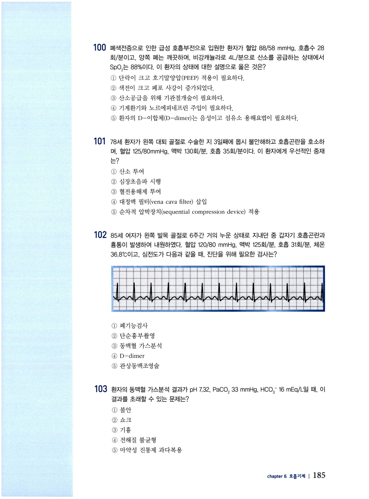
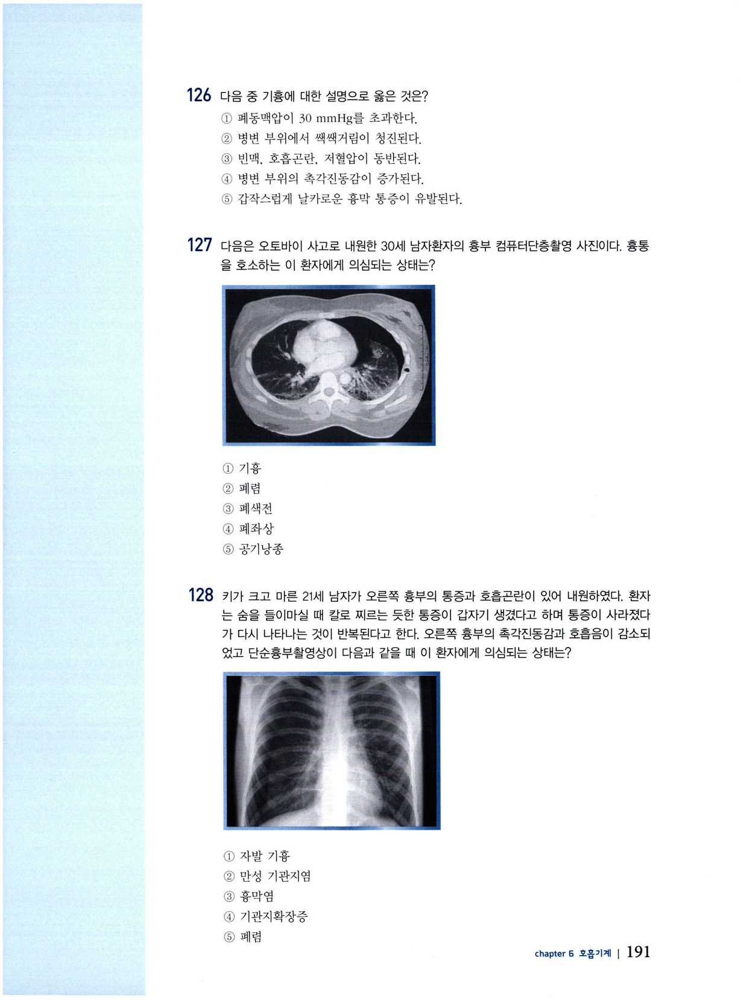
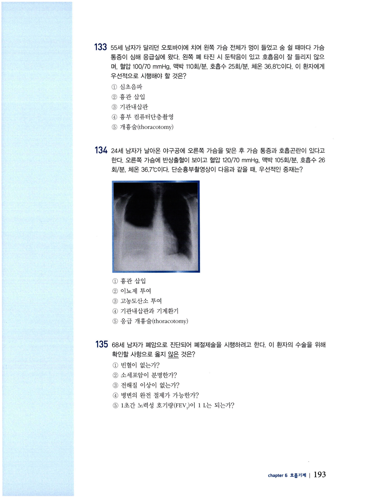
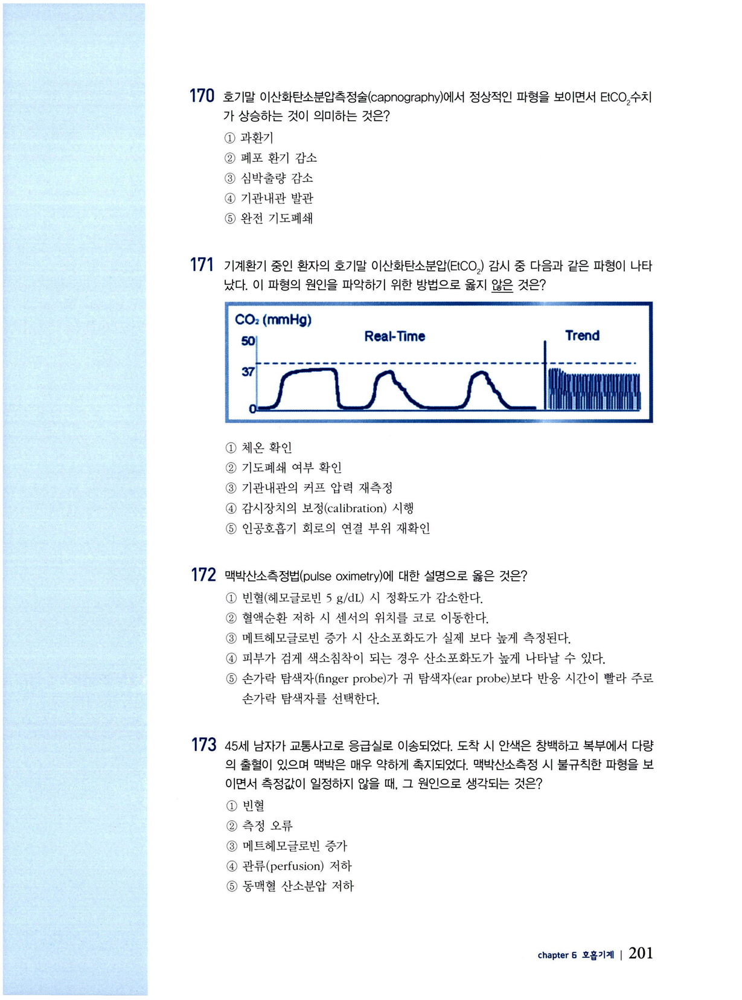
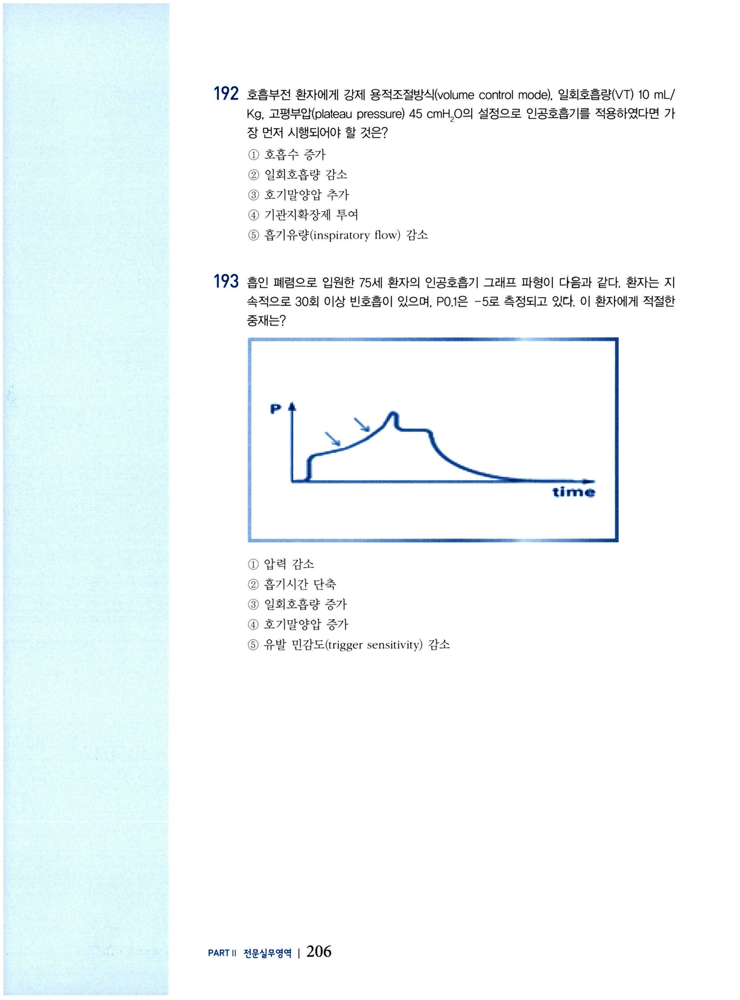
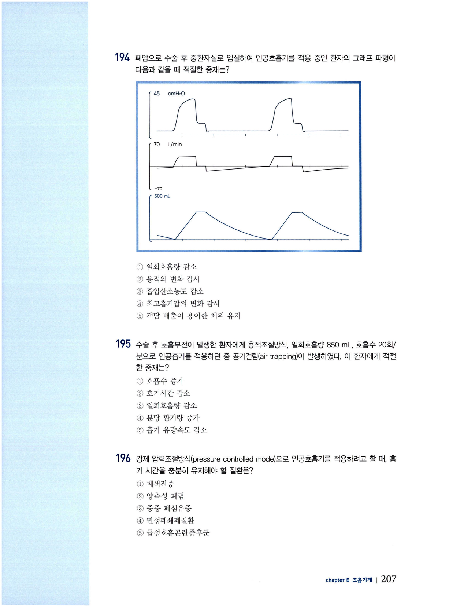
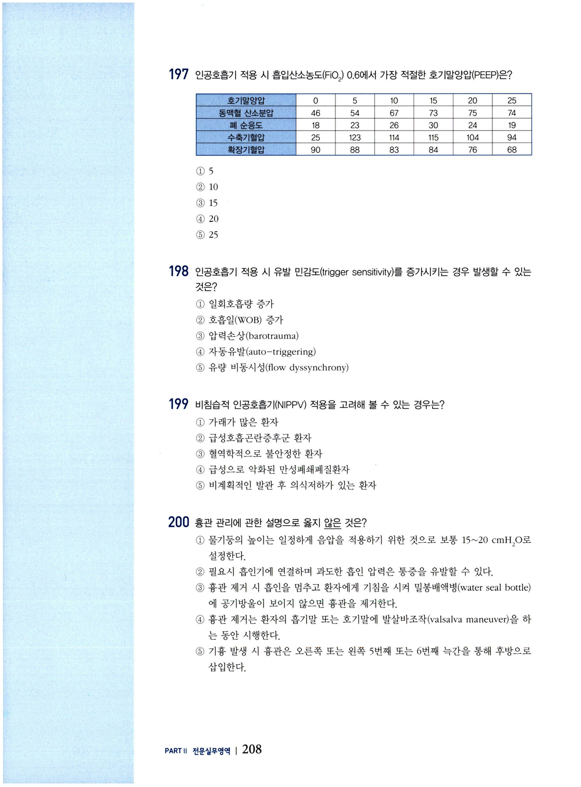

호흡기계 문제
전문간호사 자격시험 대비 문제집 — 호흡기계 (CHAPTER 6).
문 01 대엽폐렴 청진
대엽폐렴(lobar pneumonia)을 진단 받은 환자의 병변이 있는 폐 부위를 청진했을 때 예상되는 결과는?
- 건성수포음(rhonchi)
- 협착음(stridor)
- 공명음(resonance)
- 둔탁음(dullness)
- 염소울음소리(egophony)
문 02 COPD 흉부검진
65세 남자가 호흡곤란으로 응급실에 왔다. 50갑년의 흡연력이 있으며 운동 시 호흡곤란이 있고 발열이나 오한은 없다. 최근 감기 걸린 사람과 접촉한 적은 없다고 한다. 이 환자의 흉부 검진 시 예상되는 결과는?
- 오목가슴
- 함몰 흉곽
- 흉곽의 전후직경 증가
- 흉곽의 좌우직경 증가
- 흉곽의 전후직경 : 좌우직경 = 1 : 2
문 03 촉각진동감
48세 여자가 운동 시 호흡곤란이 있어 내원하였다. 지난 3일간 38.9°C 이상의 발열과 오한이 있었고 녹색 가래가 동반된 기침을 하였다고 한다. 왼쪽 폐하엽에서 수포음이 들리고 단순흉부촬영상에서 왼쪽 하엽에 경화가 있다. 왼쪽 흉부 촉진 시 예상되는 촉각진동감(tactile fremitus)에 대한 검진 결과는?
- 감소
- 증가
- 변화 없음
- 흡기 시 소실
- 호기 시 증가
문 04 횡격막 운동범위
흉부 검진 시 건강한 성인의 횡격막 운동(diaphragmatic excursion) 범위는?
- 1~2 cm
- 2~3 cm
- 5~6 cm
- 9~10 cm
- 10~11 cm
문 05 기흉 청진
기흉이 의심되는 환자의 호흡음 청진 시 예상되는 검진 결과는?
- 공명음
- 수포음
- 씩씩거림
- 건성수포음
- 호흡음 감소
문 06 기흉 타진
21세 남자가 갑작스러운 호흡곤란으로 내원하였다. 키 175 cm 체중 54 kg이었고 발열, 기침, 오한, 인후통은 없으며, 담배는 피우지 않는다고 한다. 이 환자의 흉부 타진 시 예상되는 검진 결과는?
- 침범된 부위의 둔탁음
- 침범된 부위의 공명음 감소
- 침범된 부위의 공명음 증가
- 침범된 부위의 촉각진동감 증가
- 침범되지 않은 부위의 공명음 증가
문 07 발관 후 흉부검진
75세 남자가 왼쪽 폐하엽절제술 후 기관내관을 발관하고 호흡곤란과 흉통을 호소한다. 이 환자의 흉부 검진 시 나타날 수 있는 결과는?
- 왼쪽 폐 타진 시 둔탁음
- 왼쪽 폐의 씩씩거림
- 왼쪽 폐의 호흡음 증가
- 오른쪽으로의 기관 편위
- 왼쪽 폐의 촉각진동감 증가
문 08 술통형 가슴
만성폐쇄폐질환이 있는 환자에게서 술통형 가슴이 나타나는 원인은?
- 척추의 뒤틀림
- 폐의 탄력성 상실
- 하부 흉골의 함몰
- 흉곽의 전방 돌출
- 늑간근의 신축성 증가
문 09 청색증 검진 부위
저산소증이 의심되는 환자에게 청색증 여부를 확인하려고 할 때 적절한 검진 부위는?
- 코
- 귀
- 손톱
- 얼굴 피부
- 구강 점막과 혀
문 10 촉각진동감 감소
흉부 뒷면을 검진했을 때 오른쪽 상엽 부위의 촉각진동감이 감소되었다. 이 환자에게 의심되는 상태는?
- 폐렴
- 폐종양
- 폐기종
- 기관지확장증
- 만성 기관지염
문 11 촉각진동감 검사법
흉부 검진 시 촉각진동감을 확인하기 위한 적절한 방법은?
- 조용히 속삭이게 한다.
- 호흡을 빠르게 하게 한다.
- 청진기의 종형을 사용한다.
- 심호흡을 하고 멈추게 한다.
- 대칭적으로 흉부를 촉진한다.
문 12 흉막마찰음
50세 남자가 호흡곤란으로 내원하였다. 숨 쉴 때마다 가슴 통증이 있고 흡기와 호기 시 거칠고 낮은 음이 들릴 때 이 호흡음은 무엇인가?
- 협착음
- 수포음
- 씩씩거림
- 흉막마찰음
- 건성수포음
문 13 폐경화
왼쪽 폐 하부에서 둔탁음이 타진되고 청진 시 흡기 말에 수포음이 들린다. 기관은 편위되지 않았으나 촉각진동감과 전도되는 목소리가 모두 증가되었다면 이 환자에게 의심되는 상태는?
- 기흉
- 무기폐
- 폐경화
- 흉막삼출
- 이물질 흡인
문 14 호흡음 설명
다음 중 호흡음에 대한 설명으로 옳은 것은?
- 폐포음(vesicular sound)은 대부분 폐 전체에서 들린다.
- 폐포음(vesicular sound)은 호기음이 흡기음보다 길게 들린다.
- 씩씩거림(wheeze)은 큰 기도에 분비물이 있음을 의미한다.
- 기관지폐포음(bronchovesicular sound)은 폐의 말단에서 주로 들린다.
- 수포음(crackle)은 폐쇄되어 좁아진 기관지로 공기가 빠르게 지나갈 때 나는 소리이다.
문 15 긴장성 기흉
40세 남자가 호흡곤란으로 방문하였다. 흉부 타진 시 오른쪽 폐 상부에서 과다공명음이 들리고 촉각진동감과 호흡음이 왼쪽에 비해 현저히 감소되었으며, 기관이 왼쪽으로 편위되어 있을 때 이 환자에게 의심되는 상태는?
- 천식
- 기흉
- 폐경화
- 기관지염
- 만성폐쇄폐질환
문 16 흉부 타진법
흉부 타진에 대한 설명으로 옳은 것은?
- 손가락 패드를 이용하여 두드린다.
- 흉벽 표면에 타진판 손가락 전체를 완전히 닿도록 덮는다.
- 타진추 손가락과 타진판 손가락의 각도는 45°가 되게 한다.
- 손목을 이완시킨 상태에서 민첩하고 탄력 있게 움직인다.
- 한쪽 폐 전체를 타진한 다음 다른 쪽 폐를 타진한다.
문 17 기관지소리
35세 폐렴을 앓고 있는 환자에게 '하나-둘-셋'을 속삭이듯이 말하게 하면서 청진했을 때 소리가 크고 분명하게 들렸다. 이것을 무엇이라고 하는가?
- 씩씩거림
- 정상 호흡음
- 염소울음소리(egophony)
- 기관지소리(bronchophony)
- 속삭임 가슴소리(whispered pectoriloquy)
문 18 비오 호흡
다음 중 호흡의 깊이와 횟수가 일정하게 증가하고 간헐적으로 무호흡이 있는 형태의 호흡은?
- 무호흡(apnea)
- 과다호흡(hyperpnea)
- 비오 호흡(Biot's respiration)
- 쿠스마울 호흡(Kussmaul's respiration)
- 체인-스토크스 호흡(Cheyne-Stokes respiration)
문 19 정상 흉부 시진
다음 흉부 시진 결과 중 정상인 것은?
- 40세 남자의 늑골각이 110°이다.
- 24세 여자의 흉추에 척주측만증(scoliosis)이 있다.
- 80세 남자의 흉곽이 전후직경:좌우직경=1:1이다.
- 35세 남자가 호흡 시 늑간 수축(intercostal retraction)이 있다.
- 34세 여자가 호흡 시 흉부의 모순 움직임(paradoxical motion)이 있다.
문 20 중심정맥관 후 기흉
중환자실에 입원 중인 53세 환자가 오른쪽 쇄골하정맥에 중심정맥관을 삽입한 후 호흡곤란을 호소하여 오른쪽 폐상엽의 호흡음이 감소되었다. 이 환자에게 의심되는 상태는?
- 폐렴
- 기흉
- 무기폐
- 흉막염
- 기관지확장증
문 21 응급 호흡음
다음 중 즉시 응급조치가 필요한 비정상적인 호흡음은?
- 수포음(crackles)
- 협착음(stridor)
- 씩씩거림(wheezes)
- 건성수포음(rhonchi)
- 속삭임 가슴소리(whispered pectoriloquy)
문 22 흉부 청진법
흉부를 청진하는 방법으로 옳은 것은?
- 전반적으로 청진기의 종형을 이용한다.
- 각 청진 부위마다 흡기 시 호흡음만 청진한다.
- 조용히 청진할 수 있도록 환자에게 숨을 얕게 쉬게 한다.
- 한쪽 폐 전체를 먼저 청진한 다음 다른 쪽 폐를 청진한다.
- 폐 첨부에서 기저부 방향으로 좌우를 비교하여 사다리 형태로 청진한다.
문 23 흉곽·폐 검진(틀린 것)
흉곽과 폐 검진에 대한 내용으로 옳지 않은 것은?
- 기침이 있는 환자에게 증상 기간, 유발요인, 속쓰림이 있는지 문진한다.
- 흉곽의 모양과 호흡양상을 시진한다.
- 10번째 늑골 높이에 양손가락을 놓고 환자에게 숨을 깊게 쉬게 하여 흉곽 확장의 대칭성을 확인한다.
- 한쪽 흉곽에서 위에서 아래로 타진한 후 반대쪽 흉곽에서 동일하게 시행한다.
- 흉곽의 위에서 아래 방향으로 좌우를 비교하여 청진한다.
문 24 정상 흉부 소견
55세 남자가 며칠째 계속되는 기침과 객담이 있어 내원하였다. 다음 흉부 검진 결과 중 정상으로 볼 수 있는 것은?
- 호흡수는 14~16회/분이고, 가끔 한숨을 쉰다.
- 안정된 호흡 시 흉골유돌근과 사각근의 수축이 있다.
- 양쪽 견갑골 사이에서 촉각진동감이 가장 잘 느껴진다.
- 횡격막 운동범위가 5 cm이다.
- 양쪽 폐 타진 시 공명음이 들린다.
문 25 엽폐렴
60세 남자의 흉부 검진 시 호흡수가 증가되었고 오른쪽 흉곽이 잘 확장되지 않으며 오른쪽 하엽에서 둔탁음과 수포음이 들린다. 이 환자에게 의심되는 상태는?
- 천식
- 폐기종
- 엽폐렴
- 흉막삼출
- 기관지염
문 26 공명음 특징
60세 환자의 흉부 타진 시 공명음(resonance)이 들린다. 이 타진음의 특징으로 옳은 것은?
- 약한 강도, 높은 음조, 긴 지속시간
- 약한 강도, 높은 음조, 짧은 지속시간
- 중간 강도, 중간 음조, 중간 지속시간
- 큰 강도, 낮은 음조, 긴 지속시간
- 매우 큰 강도, 낮은 음조, 더 긴 지속시간
문 27 기관지소리 설명
왼쪽 하엽의 폐렴이 의심되는 환자에게 기관지소리(bronchophony)를 청진하고자 한다. 이에 대한 설명으로 옳은 것은?
- 환자에게 "이-이"를 말하게 하였을 때 소리가 "에이"로 들린다.
- 환자에게 "하나-둘-셋"을 말하게 하였을 때 정상인 부위에서 소리가 크고 깨끗하게 들린다.
- 환자에게 "하나-둘-셋"을 말하게 하였을 때 병변이 있는 부위에서 소리가 크고 깨끗하게 들린다.
- 환자에게 "하나-둘-셋"을 말하게 하였을 때 병변이 있는 부위에서 소리가 작고 약하게 들린다.
- 환자에게 "하나-둘-셋"을 속삭이는 목소리로 말하게 하였을 때 병변이 있는 부위에서 소리가 작고 불분명하게 들린다.
문 28 호흡생리
다음 호흡생리에 대한 설명으로 옳은 것은?
- 해부학적 사강은 공기의 이동만 있고 실제 가스교환이 이루어지지 않는 영역으로 약 150 mL 정도이다.
- 산증, 고체온, PaCO₂ 상승 시 혈액은 폐에서 쉽게 산소를 얻으나 조직으로의 산소 운반은 감소된다.
- 흡기와 호기는 능동적으로 호흡조절중추에 의해 유발된다.
- 대동맥궁과 경동맥동은 호흡을 조절하는 신경중추이다.
- 환기/관류비가 4/2라면 저환기상태이다.
문 29 폐포동맥간 산소분압차
저산소증의 폐내 원인과 폐 이외의 원인을 감별하는 데 중요한 검사는?
- 동맥혈 산소분압(PaO₂)
- 동맥혈 이산화탄소분압(PaCO₂)
- 염기과잉(BE)
- 동맥혈 산소포화도(SaO₂)
- 폐포동맥간 산소분압차(AaDO₂)
문 30 저환기 지표(ABGA)
다음 중 저환기를 명확히 보여주는 지표는?
- pO₂ 59 mmHg
- pCO₂ 55 mmHg
- pH 7.50
- HCO₃ 48 mEq/L
- 호흡수 10회/분
문 31 환기/관류
폐의 환기/관류에 대한 설명으로 옳은 것은?
- 호흡사강은 저산소증에 의해 발생한다.
- 폐 각 부위의 환기/관류비는 균등하다.
- 폐 첨부는 폐 기저부보다 환기량이 적다.
- 누운 자세는 폐 첨부의 환기 영역을 확장시킨다.
- 환기에 비해 관류가 감소되면 저산소혈증이 유발된다.
문 32 환기/관류비 0.8 이상
다음 중 환기/관류비(V/Q ratio)가 0.8 이상인 질환은?
- 폐기종
- 폐색전증
- 기관지확장증
- 만성 기관지염
- 만성폐쇄폐질환
문 33 적절한 환기
다음 중 적절한 환기가 가능한 경우는?
- 빈혈
- 동요가슴
- 중등도 비만
- 척주뒤후만증
- 횡격막 운동범위 6 cm
문 34 폐렴 설명
폐렴에 대한 설명으로 옳은 것은?
- 입원 12시간 후에 발생한 폐렴은 병원획득 폐렴으로 간주해야 한다.
- 폐렴 환자에서 균주 감별을 위해 시행하는 객담배양검사는 항생제 사용 후에 시행한다.
- 전형적(typical) 폐렴의 가장 흔한 원인균은 폐렴연쇄구균(Streptococcus pneumoniae)이다.
- 전형적(typical) 폐렴은 비정형(atypical) 폐렴에 비해 열이 덜 나고 아급성으로 발생하는 경우가 많다.
- 기관내삽관하고 인공호흡기 적용 후 24시간째에 발생한 폐렴은 기계환기 폐렴으로 판단하고 치료해야 한다.
문 35 지역사회획득 폐렴 원인균
국내 지역사회 획득 폐렴의 가장 흔한 원인균은?
- Hemophilus influenzae
- Staphylococcus aureus
- Streptococcus pneumoniae
- Mycoplasma pneumoniae
- Chlamydia pneumoniae
문 36 경험적 항생제
평소 건강했던 76세 남자가 1주 전부터 열, 기침과 화농성 객담이 지속된다고 한다. 의식은 명료하고 혈압 110/70 mmHg, 맥박 95회/분, 호흡수 32회/분이다. 단순흉부촬영상에서 왼쪽 폐하엽에 침윤이 있다. 이 환자에게 적절한 경험적 항생제는?
- β-lactam
- macrolide
- β-lactam + macrolide
- macrolide + fluoroquinolone
- β-lactam + macrolide + fluoroquinolone
문 37 ATS/IDSA CAP 항균제
미국 흉부학회/감염학회(ATS/IDSA)의 성인 지역사회 획득 폐렴(community acquired pneumonia) 관리지침에 근거하여, 양쪽 자궁관결찰술을 받았고 macrolide계 항생제에 내성이 있는 46세 여자의 지역사회 획득 폐렴 치료를 위한 가장 적절한 항균제는?
- clarithromycin
- amoxicillin
- doxycycline
- fosfomycin
- β-lactam
문 38 ATS/IDSA CAP 항균제(동반질환)
미국 흉부학회/감염학회(ATS/IDSA)의 성인 지역사회 획득 폐렴 관리지침에 근거하여, 심근경색 전단계이며 심부전과 2형 당뇨병이 있는 39세 남자의 지역사회 획득 폐렴 치료를 위한 가장 적절한 항균제는?
- amoxicillin
- cephalosporin
- clarithromycin
- β-lactam과 macrolide
- respiratory fluoroquinolone
문 39 예방접종 계획
지역사회 획득 폐렴으로 오늘 입원한 62세의 환자를 위한 예방접종 계획으로 적절한 것은?
- 금일 인플루엔자와 폐렴 백신 투여
- 항균치료가 끝나면 폐렴 백신 투여
- 2주 후에 인플루엔자와 폐렴 백신 투여
- 금일 폐렴 백신을 투여하고 2주 후에 인플루엔자 백신 투여
- 금일 인플루엔자 백신을 투여하고 2주 후에 폐렴 백신 투여
문 40 흡인 폐렴 위험
흡인 폐렴이 발생할 수 있는 위험성이 높은 경우는?
- 연하곤란
- 척추마취
- 하지마비
- 위장관 영양
- 면역억제제 복용
문 41 진균 폐렴
다음 중 면역이 억제된 환자에게 발생하나 환자와 환자 간에 감염이 되지 않는 폐렴은?
- 바이러스 폐렴
- 세균 폐렴
- 기관지 폐렴
- 진균 폐렴
- 흡인 폐렴
문 42 병원획득 폐렴
고관절 치환술(total hip replacement)을 받고 일주일 이상 입원 중인 환자가 산소요구량이 점점 많아지고 진한 녹색의 객담을 동반한 기침을 하여 발열과 호흡곤란을 호소한다. 이 환자에게 의심되는 상태는?
- 진균 폐렴
- 흡인 폐렴
- 병원 획득 폐렴
- 인공호흡기 관련 폐렴
- 의료기관 관련 폐렴(healthcare-associated pneumonia)
문 43 COPD 소견
다음 중 만성폐쇄폐질환에서 볼 수 있는 소견은?
- 폐활량 증가
- 기도저항 증가
- FEV₁/FVC < 0.7
- 환기/관류비 균등
- 강제호기유속(forced expiratory flow rates) 감소
문 44 COPD 원인
만성폐쇄폐질환을 유발하는 가장 큰 원인은?
- 흡연
- 약물 중독
- 계절성 알레르기
- 과다한 알코올 섭취
- 오염된 환경에의 노출
문 45 COPD 일치 소견
만성폐쇄폐질환을 진단 받은 대부분의 환자에서 일치되는 소견은?
- 흉막염 통증
- 적혈구 증가증
- 흡기 시 호흡곤란
- 단순흉부촬영상 상 횡격막 상승
- 속효성 베타-2 작용제 투여 후에도 FEV₁/FVC < 0.7
문 46 COPD 단순흉부촬영
만성폐쇄폐질환이 악화된 환자에서 단순흉부촬영이 필요한 경우는?
- 호흡수가 증가할 때
- 객담의 양이 증가할 때
- 호흡보조근을 사용할 때
- 동반되는 폐렴을 배제해야 할 때
- 일상적으로 모든 환자에게 필요
문 47 COPD 급성악화 ABGA
만성폐쇄폐질환이 급성으로 악화된 환자가 최소한으로 반응하여 빈호흡과 빈맥이 있다. 동맥혈가스분석 결과가 pH 7.20, PaCO₂ 68 mmHg, PaO₂ 65 mmHg일 때 우선적인 중재는?
- 기관내삽관
- 흉관 삽입
- 비침습적 인공호흡
- 중탄산나트륨 투여
- 비강캐뉼라를 통한 저농도 산소공급
문 48 COPD 초기 치료제
30년 동안 하루 1갑의 담배를 피워 온 70세 남자가 만성폐쇄폐질환으로 진단 받았다. 운동 시 호흡곤란이 조금 있으나 일상생활을 하는 데는 별 불편함이 없을 정도일 때 적절한 초기 치료제는?
- 흡입 fluticasone
- 흡입 albuterol
- 흡입 tiotropium
- 경구 corticosteroid
- 경구 theophylline
문 49 폐심장증
만성폐쇄폐질환의 말기 단계에 나타나는 폐혈관의 압력 증가로 인한 우심실 기능 저하를 무엇이라고 하는가?
- 폐심장증(cor pulmonale)
- 폐동맥 고혈압
- 울혈 심부전
- 경정맥 팽창
- 두방 심장(cor biloculare)
문 50 기관내삽관 후 저혈압
만성폐쇄폐질환 환자가 상태가 악화되어 기관내삽관을 하고 기계환기가 적용되었다. 기관내삽관 몇 분 후에 빈맥과 심각한 저혈압이 나타나고 산소포화도가 현저하게 떨어지고 있다. 이 환자에게 우선적인 중재는?
- 흉강천자를 시행한다.
- 기관지확장제를 투여한다.
- 환자의 불안을 진정시킨다.
- 인공호흡기 설정을 재조정한다.
- 높은 호기말양압을 적용한다.
문 51 ipratropium 작용
만성폐쇄폐질환이 있는 환자에게 ipratropium bromide (Atrovent®)를 투여할 때 기대하는 약리작용은?
- 염증 완화
- 점액 용해
- 기관지 확장
- 폐포 부피 감소
- 점액 섬모청소율 증가
문 52 COPD 고혈당 ABGA
만성폐쇄폐질환 환자가 현재 비강캐뉼라를 통해 2 L/분으로 산소 투여와 스테로이드 치료 중으로, 오늘 시행한 동맥혈 가스분석 결과가 pH 7.23, PCO₂ 47 mmHg, PO₂ 90 mmHg, HCO₃ 21 mEq/L, 혈당 278 mg/dL일 때, 적절한 중재는?
- 정맥 수액과 전해질 보충
- 산소 투여량을 3 L/분으로 증가
- 생리식염수에 소량의 인슐린을 섞어 점적 주입
- 중탄산염 용액 50 mL를 정맥으로 일시 주사(IV bolus)
- 속효형인슐린(regular insulin) 6단위를 정맥으로 일시 주사
문 53 천식 설명
천식에 대한 설명으로 옳은 것은?
- 기관지 경련과 점액분비 증가, 점막부종으로 인해 발작적 기도폐색이 야기된다.
- 가장 특징적인 병태생리적 변화는 폐포벽 파괴이다.
- 증상으로 객담이 동반된 기침과 흉부압박감이 있다.
- 천식 발작 시 서맥과 수축기 저혈압이 동반된다.
- 주로 낮 동안에 증상이 악화된다.
문 54 급성 천식 단순흉부촬영
급성 천식 발작이 있는 환자의 단순흉부촬영상에서 볼 수 있는 것은?
- 무기폐(atelectasis)
- 경화(consolidation)
- 폐 침윤(infiltration)
- 과다팽창(hyperinflation)
- 컬리 B선(Kerley B line)
문 55 천식 악화 처치
중등도의 만성 천식이 있는 환자가 3일 전부터 시작된 목의 통증, 맑은 콧물과 마른 기침이 있어 내원하였다. 이전에는 salmeterol (Advair)로 증상이 잘 조절되었고 가끔 씩씩거림이 있으면 주 1-2회 정도 albuterol을 추가적으로 사용했는데, 어제부터는 씩씩거림이 있을 때 albuterol을 3시간마다 2회씩 분무해야만 안정되었다고 한다. 다음으로 시행해야 할 것은?
- 폐활량 측정
- 기관지경검사
- 단순흉부촬영
- 산소포화도 측정
- 객담 도말검사
문 56 급성 천식 약물
30세 여자가 급성으로 천식이 악화되어 입원하였다. 적절한 약물 치료는?
- corticosteroids 흡입
- theophylline 정맥 투여
- beta-2 작용제 경구 투여
- corticosteroids 흡입과 theophylline 정맥 투여
- corticosteroids 경구 투여와 beta-2 작용제 흡입
문 57 천식 발작 빈도 감소
급성 천식 발작으로 지난 6개월 동안 3차례 입원을 했던 15세 환아에게 천식 발작 빈도를 감소시키기 위한 가장 적절한 약물은?
- 흡입 fluticasone
- 흡입 albuterol
- 경구 propranolol
- 경구 corticosteroid
- 경구 theophylline
문 58 중등도 천식 추가약물
천식 환자에게서 중등도의 증상이 있을 때 추가할 약물은?
- 경구 테오필린
- 비만세포 안정제
- 경구 코르티코스테로이드
- 류코트리엔 길항제
- 속효성 베타-2 작용제
문 59 류코트리엔 길항제
천식 치료에서 류코트리엔 길항제(leukotriene antagonists)의 사용 목적은?
- 염증 반응 억제
- 기관지 수축 예방
- 기관지 경련 예방
- 급성 기관지 경련 치료
- 기관지 경련 및 염증 치료
문 60 흡입 ICS 효과 시기
천식 환자에서 흡입 코르티코스테로이드 투여 시작한 후 증상 조절 효과를 보이는 시기는?
- 투여 첫날
- 투여 2~8일 이내
- 투여 약 3~4주 이내
- 투여 약 1~2개월 이내
- 투여 약 3~5개월 이내
문 61 SABA 작용
천식 환자에서 속효성 베타-2 작용제(SABA)의 약리작용은?
- 염증 완화
- 분비물 억제
- 평활근 이완
- 류코트리엔 변형
- 비만세포 매개물질 억제
문 62 천식 PEF/FEV1
천식이 있는 환자가 3일 전부터 시작된 맑은 콧물과 마른기침이 있어 내원하였다. 천식 증상은 그동안 잘 조절되었으며 기침이나 씩씩거림이 있을 때는 budesonide (Pulmicort)와 albuterol을 사용해 왔다고 한다. 열은 없고 내원하기 전 측정한 최대날숨유량(PEF)은 최고 55%이며 병원에서 측정한 1초간 노력성 호기량(FEV₁)은 65% 정도로 예측된다. 이 환자에게 필요한 약물은?
- theophylline
- salmeterol
- prednisone
- montelukast
- ipratropium
문 63 중등도 천식 기본약
중등도 만성 천식 치료의 기본 주축이 되는 약물은?
- 크로몰린
- 경구 테오필린
- 비만세포 안정제
- 속효성 베타-2 작용제
- 흡입 코르티코스테로이드
문 64 기관내삽관 필요 징후
다음 중 천식 증상이 악화되어 입원한 환자에게 기관내삽관과 기계환기가 필요함을 보여주는 임상 징후는?
- 호흡성 알칼리증
- 흉곽의 과다팽창
- 양쪽 폐의 씩씩거림
- 자극에 대한 반응 감소
- 동맥혈 산소포화도 92%
문 65 천식 발작 ABGA
38세 천식 환자가 심한 천식 발작으로 중환자실에 입원하였다. 환자는 점점 더 호흡이 힘들어진다고 하여, 동맥혈 가스분석 결과가 pH 7.25, PCO₂ 68 mmHg, PO₂ 60 mmHg, HCO₃ 24 mEq/L일 때, 가장 적절한 중재는?
- 경구 스테로이드 추가
- 류코트리엔 조절제 투여
- 흡입 산화질소 투여
- 즉시 기관내삽관 시행
- 서방형 테오필린 투여
문 66 albuterol 흡입제 교육
급성 천식으로 albuterol (Ventolin) 흡입제를 처방 받은 환자에게 사용법을 교육하였다. 다음 중 사용법에 대해 잘 이해했다고 판단되는 환자의 반응은?
- 한 번 흡입하고 나서 1분 정도 있다가 두 번째 흡입을 할 거예요.
- 숨쉬기 힘들지 않더라도 4시간마다 두 번씩 흡입할 거예요.
- 향후 천식이 재발하는 것을 예방하기 위해 정기적으로 흡입할 거예요.
- 숨쉬기 힘들어질 때마다 두 번씩 흡입할 거예요.
- 아무리 숨쉬기 힘들어도 1번만 흡입할 거예요.
문 67 ARDS 설명
다음 중 급성호흡곤란증후군에 대한 설명으로 옳은 것은?
- 염증 반응으로 폐포 모세혈관 손상과 삼출액이 폐포에 축적되어 중증도의 폐부종이 유발된다.
- 특정 물질의 흡인으로 인해 폐부종이 유발된다.
- 초기부터 호흡곤란, 청색증, 호흡성 산증이 유발된다.
- 잔기량이 증가되어 폐포에 과부하가 유발된다.
- 호흡 시 극심한 통증이 유발된다.
문 68 흡인 후 ARDS
25세 여자가 약물과다 복용 후 의식이 저하되어 다량의 위액이 흡인된 상태로 중환자실에 입원하였다. 기관내삽관 후 실시한 동맥혈 가스분석 결과가 pH 7.30, PaCO₂ 30 mmHg, PaO₂ 40 mmHg (FiO₂ 1.0)이고 단순흉부촬영상에서 양쪽 폐에 전반적인 침윤이 나타났을 때, 이 환자에게 의심되는 상태는?
- 폐색전증
- 급성 기관지염
- 기관지확장증
- 폐동맥고혈압
- 급성호흡곤란증후군
문 69 ARDS 특징(아닌 것)
다음 중 급성호흡곤란증후군의 임상적 특징에 해당하지 않는 것은?
- 빈호흡
- 불응성 저산소혈증
- 단순흉부촬영상 양쪽 폐의 미만성 침윤
- 동맥혈 산소분압:흡입산소농도(<200)
- 폐 사강 감소
문 70 ARDS 단순흉부촬영
급성호흡곤란증후군이 있는 환자의 단순흉부촬영상에서 볼 수 있는 것은?
- 농흉
- 양쪽 흉막삼출
- 왼쪽 하부의 폐허탈
- 과도통기(hyperaeration)
- 고르지 못한 산재성 양쪽 폐 침윤
문 71 ARDS 인공호흡기 판단
70 kg인 급성호흡곤란증후군 환자가 기계환기 중으로 최고흡기압(peak inspiratory pressure) 55 cmH₂O, 고평부압(plateau pressure) 50 cmH₂O, PaO₂ 60 mmHg이다. 인공호흡기 설정이 보조조절방식(assist-control mode), 호흡수 12회/분, 일회호흡량 700 mL, 흡입산소농도(FiO₂) 1.0, 호기말양압(PEEP) 15 cmH₂O일 때, 올바른 판단은?
- 고평부압은 적절하다.
- 호흡수를 증가시켜야 한다.
- 일회호흡량이 환자에게 적절하지 않다.
- 산소화를 개선하기 위해서 PEEP을 5 cmH₂O로 내려야 한다.
- 지속기도양압(continuous positive airway pressure)으로 환기방식을 변경해야 한다.
문 72 ARDS 저혈압 중재
체중 60 kg인 급성호흡곤란증후군 환자가 흡입산소농도(FiO₂) 0.7, 일회호흡량(TV) 420 mL, 호흡수 10회/분, 호기말양압(PEEP) 20 cmH₂O로 기계환기 중이며, 현재 혈압 75/60 mmHg, 맥박 120회/분, 체온 37°C이고 동맥혈 산소분압 70 mmHg이다. 이 환자에게 적절한 중재는?
- 흡입산소농도를 올린다.
- 호기말양압을 10 cmH₂O로 낮춘다.
- 일회호흡량을 600 mL로 증가시킨다.
- 수축기 혈압을 올리기 위해 도파민을 투여한다.
- 생리식염수 500 mL를 정맥으로 일시 주사(bolus)한다.
문 73 ARDS 생존율 중재
다음 중 기계환기 중인 급성호흡곤란증후군 환자의 생존율을 높이기 위해 강력한 임상적 근거에 의해 추천되는 중재는?
- 산화질소 흡입
- 고빈도환기
- 저일회호흡량
- 높은 호기말양압
- 글루코코르티코이드 투여
문 74 ARDS 임상양상
급성호흡곤란증후군에서 나타나는 임상 양상으로 옳은 것은?
- 폐포 부종
- 폐사강 감소
- 폐동맥압 감소
- 폐내단락 감소
- 폐순응도 증가
문 75 ARDS 입증된 중재
60세 남자가 호흡곤란이 심해 기계환기를 위해 중환자실에 입원하였다. 단순흉부촬영상에서 양쪽 폐에 침윤이 보이며 동맥혈 가스분석 결과가 pH 7.29, PaCO₂ 50 mmHg, PaO₂ 72 mmHg, HCO₃ 26 mEq/L, SaO₂ 92% (FiO₂ 0.6)일 때 이 환자에게 필요한 효과가 입증된 중재는?
- 산화질소 흡입
- 표면활성제 투여
- 저일회호흡량 적용
- 낮은 호기말양압 적용
- 글루코코르티코이드 투여
문 76 불응성 저산소 중재
기계환기 중인 급성호흡곤란증후군 환자의 동맥혈 가스분석 결과가 FiO₂ 1.0인 상태에서 PaO₂ 58 mmHg일 때, 적절한 중재는?
- 고빈도환기 적용
- 스테로이드 투여
- 호기말양압 추가
- 기관지확장제 투여
- 산화질소 흡입
문 77 익수 후 ARDS
물에 빠져 거의 의사 직전에 구조된 45세 남자가 호흡곤란이 심하고 흡입산소농도 50%로 산소 투여 중인 상태에서 동맥혈 가스분석 결과가 pH 7.22, PaCO₂ 50 mmHg, PaO₂ 65 mmHg, HCO₃⁻ 23 mEq/L, SaO₂ 88%이고 단순흉부촬영상에서 양쪽 폐에 침윤이 있다. 이 환자에게 가장 적절한 중재는?
- 복와위
- 스테로이드 투여
- 산화질소 흡입
- 표면활성제 투여
- 기관내삽관과 기계환기
문 78 PEEP 효과
급성호흡곤란증후군 환자에게 기계환기를 적용할 때 호기말양압을 설정하였다. 기대되는 효과는?
- 기흉 방지
- 폐단락 증가
- 폐순응도 증가
- 폐포 허탈 방지
- 기능잔기용량 감소
문 79 외상 후 폐부종
평소 건강했던 35세 남자가 오토바이 사고로 인한 흉부손상으로 응급 수술을 받은 후 호흡곤란을 호소하였다. 호기 시 씩씩거림, 수포음이 들리고 객담에 붉은 거품이 있으며 단순흉부촬영상에서 미만성 폐포 침윤이 보인다. 이 환자에게 의심되는 상태는?
- 기흉
- 무기폐
- 폐부종
- 폐색전증
- 흡인 폐렴
문 80 외상 후 불응성 저산소
47세 여자가 차량 충돌사고로 가슴을 크게 다친 후 빈호흡, 호흡곤란이 있어 응급실에 왔다. 폐에서 수포음이 들리고 즉시 산소를 공급했으나 저산소혈증이 호전되지 않는다. 이 환자에게 의심되는 상태는?
- 폐암
- 천식
- 폐색전증
- 기관지확장증
- 급성호흡곤란증후군
문 81 급성호흡부전 ABGA
62세 여자가 급성호흡부전으로 입원하였다. 만성폐쇄폐질환의 과거력이 있으며, 현재 의식은 명료하나 호흡곤란이 심하고 입술 주위 청색증이 있으며 동맥혈 가스분석 결과가 pH 7.22, PaCO₂ 60 mmHg, PaO₂ 53 mmHg, HCO₃ 26 mEq/L, SaO₂ 80% (FiO₂ 0.3)이다. 우선적인 중재는?
- 체위배액
- 기관내삽관 인공호흡기 적용
- 기관지확장제 투여
- 흡입산소농도(FiO₂) 올림
- (보기 누락 가능 — 원문 참조)
문 82 둔기 흉부손상 ARDS
22세 남자가 교통사고로 둔기 흉부손상(blunt chest trauma)과 뇌진탕이 있어 중환자실로 입원하였다. 입원 2일째 환자는 호흡곤란이 있으며, 안절부절 못하고 죽을 것 같아 무섭다고 한다. 호흡수 34회/분, 비재호흡마스크로 100% 산소 투여 중인 상태에서 동맥혈 가스분석 결과가 pH 7.35, PaO₂ 58 mmHg, PaCO₂ 50 mmHg, HCO₃ 26 mEq/L이고 단순흉부촬영상에서 양쪽 폐에 침윤이 있다. 우선적인 중재는?
- 체위배액
- 흉관 삽입
- 기관지확장제 투여
- 기관내삽관과 기계환기
- 재호흡마스크로 100% 산소 투여
문 83 ARDS 기계환기 고려(틀린 것)
급성호흡곤란증후군 환자에게 기계환기를 시작하려고 할 때 고려해야 할 사항으로 옳지 않은 것은?
- 일회호흡량은 6 mL/kg로 설정한다.
- 기도내압은 최대 30-35 mmHg를 초과하지 않도록 한다.
- 산소포화도는 90%가 유지되도록 한다.
- 흡입산소농도는 1.0으로 시작하여 동맥혈 산소분압이 60 mmHg가 될 때까지 점차 감소시킨다.
- 호기말양압은 가능하면 추가하지 않는다.
문 84 폐동맥쐐기압 12
65세 남자가 저산소증이 있으며 폐동맥관(Swan-Ganz catheter)을 통해 폐동맥쐐기압이 12 cmH₂O로 측정되었다. 이 환자의 저산소증의 원인으로 볼 수 있는 것은?
- 급성 폐손상
- 급성 심장성 폐울혈
- 기관지 경련으로 인한 환기/관류 불균형
- 모세혈관 폐색으로 인한 호흡사강의 증가
- 급성 폐고혈압으로 인한 폐동맥 폐쇄
문 85 기관지염 초기
기관지염의 초기 임상적 특성으로 옳은 것은?
- 호흡 시 통증
- 기도 분비물 증가
- 휴식 시 호흡곤란
- 촉각진동감 증가
- 속삭임 가슴소리 증가
문 86 만성 기관지염
66세 남자가 만성적인 객담과 기침을 호소하여 내원하였다. 잦은 호흡기질환에 감염된 과거력이 있고 객담이 있는 기침과 피부 청색증이 있다. 이 환자에게 의심되는 상태는?
- 천식
- 폐심장증
- 낭성 섬유증
- 만성 기관지염
- 급성호흡곤란증후군
문 87 기관지확장증 원인
다음 중 지속되면 최종적으로 기관지확장증을 유발할 수 있는 상태는?
- 객혈
- 폐고혈압
- IgG 결핍
- 수면성 호흡장애
- 심부전으로 인한 폐울혈
문 88 폐기종 원인(아닌 것)
다음 중 폐기종을 유발하는 원인으로 옳지 않은 것은?
- 흡연
- 가족력
- 알레르기
- 상기도 감염
- 오염된 공기 환경
문 89 폐기종
60세 남자가 기침과 호흡곤란으로 내원하였다. 25갑년의 흡연력이 있고 단순흉부촬영상에서 폐포의 비정상적인 확대가 보인다. 이 환자에게 의심되는 상태는?
- 천식
- 폐렴
- 폐기종
- 만성 기관지염
- 폐쇄수면무호흡
문 90 폐기종 관련
다음 중 폐기종과 관련이 있는 것은?
- 과다환기
- 폐포 허탈
- 흡기 곤란
- 환기/관류비 균등
- 알파1-항트립신 결핍
문 91 폐기종 기계환기
폐기종으로 기계환기 중인 환자에서 기계환기와 관련된 내용으로 옳은 것은?
- 흡입산소농도(FiO₂)를 증가시켜도 산소분압은 올라가지 않을 것이다.
- 무기폐를 예방하기 위해 일회호흡량(tidal volume)을 1 mL/kg까지 증가시킬 수 있다.
- 환기 방식은 압력 조절형 방식(pressure controlled mode)이어야 한다.
- 폐의 과다팽창을 방지하기 위해 호기말양압(PEEP)은 적용하지 말아야 한다.
- 압력손상의 위험이 크므로 기도내압(airway pressure)의 변화 여부를 주의 깊게 감시해야 한다.
문 92 제한성 폐질환
다음 중 제한성 폐질환(restrictive lung disease)에 대한 내용으로 옳은 것은?
- 폐조직의 탄력성 증가
- 호흡근육 약화
- 강제폐활량 감소
- 호기 곤란
- 기도저항 증가
문 93 간질성 폐질환 증상
다음 중 미만성 간질성 폐질환(Interstitial lung disease)의 증상에 해당하는 것은?
- 객혈
- 씩씩거림
- 곤봉형 손톱
- 객담을 동반한 기침
- 얕은 노력성 호흡
문 94 낭성 섬유증
20세 남자가 호흡곤란으로 내원하였다. 반복적인 부비동 및 호흡기계 감염이 있었으며, 지방변, 입안에서 짠맛이 나는 증상이 있다고 한다. 이 환자에게 의심되는 상태는?
- 천식
- 폐심장증
- 낭성 섬유증
- 만성 기관지염
- 급성호흡곤란증후군
문 95 동요가슴
흉부 손상으로 인한 동요가슴(flail chest)에서 볼 수 있는 것은?
- 협착음(stridor)
- 코벌렁임(nasal flaring)
- 교대맥박(pulsus alternans)
- 발작 기침(paroxysmal cough)
- 모순호흡(paradoxical respiration)
문 96 수술 후 폐색전증
심근경색증으로 관상동맥우회술을 받은 76세 환자가 급작스러운 흉통과 호흡곤란을 호소하였다. 폐고혈압과 심부전의 과거력이 있는 이 환자에게 발생 가능한 호흡기 문제는?
- 흡인
- 기흉
- 혈흉
- 폐색전증
- 흉벽 손상
문 97 폐색전증 확진검사
폐색전증을 확진할 수 있는 진단검사는?
- 폐혈관조영술
- 단순흉부촬영
- 폐 환기/관류 스캔
- 동맥혈 가스분석
- 가슴경유심초음파검사
문 98 대량 폐색전증
다음 중 대량의 폐색전증을 나타내는 것은?
- 혈압 78/58 mmHg, SpO₂ 88%, 폐모세혈관쐐기압 증가
- 혈압 82/52 mmHg, SpO₂ 85%, 폐포 사강 증가
- 혈압 150/90 mmHg, SpO₂ 88%, 중심정맥압 감소
- 혈압 170/102 mmHg, SpO₂ 86%, 평균 폐동맥압 감소
- 혈압 158/98 mmHg, SpO₂ 89%, 폐혈관저항 감소
문 99 수술 후 폐색전증
3일 전 고관절 치환술을 받은 90세 환자가 중등도의 호흡곤란을 호소한다. 호흡수 40회/분, 맥박 128회/분, 혈압 80/60 mmHg이며, 폐 기저부의 호흡음이 감소되었고 심음은 정상이다. 심전도에서 심실박동수 130회의 심방세동이 관찰될 때 이 환자에게 의심되는 상태는?
- 폐부종
- 폐색전증
- 흡인 폐렴
- 심근경색증
- 수술 후 무기폐
문 100 폐색전증 상태 설명
폐색전증으로 인한 급성 호흡부전으로 입원한 환자가 혈압 88/58 mmHg, 호흡수 28회/분이고 양쪽 폐는 깨끗하다. 비강캐뉼라로 4 L/분으로 산소를 공급하는 상태에서 SpO₂는 88%이다. 이 환자의 상태에 대한 설명으로 옳은 것은?
- 단락이 크고 호기말양압(PEEP) 적용이 필요하다.
- 색전이 크고 폐포 사강이 증가되었다.
- 산소공급을 위해 기관절개술이 필요하다.
- 기계환기와 노르에피네프린 주입이 필요하다.
- 환자의 D-이합체(D-dimer)는 음성이고 섬유소 용해요법이 필요하다.
문 101 수술 후 폐색전 중재
78세 환자가 왼쪽 대퇴 골절로 수술한 지 3일째에 몹시 불안해하고 호흡곤란을 호소하며, 혈압 125/80 mmHg, 맥박 130회/분, 호흡 35회/분이다. 이 환자에게 우선적인 중재는?
- 산소 투여
- 심장초음파 시행
- 혈전용해제 투여
- 대정맥 필터(vena cava filter) 삽입
- 순차적 압박장치(sequential compression device) 적용
문 102 폐색전증 진단검사(심전도)
85세 여자가 왼쪽 발목 골절로 6주간 거의 누운 상태로 지내던 중 갑자기 호흡곤란과 흉통이 발생하여 내원하였다. 혈압 120/80 mmHg, 맥박 125회/분, 호흡 31회/분, 체온 36.8°C이고 심전도가 다음과 같을 때, 진단을 위해 필요한 검사는?
- 폐기능검사
- 단순흉부촬영
- 동맥혈 가스분석
- D-dimer
- 관상동맥조영술

문 103 대사성 산증 ABGA
환자의 동맥혈 가스분석 결과가 pH 7.32, PaCO₂ 33 mmHg, HCO₃ 16 mEq/L일 때, 이 결과를 초래할 수 있는 문제는?
- 불안
- 쇼크
- 기흉
- 전해질 불균형
- 마약성 진통제 과다복용
문 104 조영제 전후 수액
다음 중 조영제를 사용한 흉부 컴퓨터단층촬영 전후로 0.9% 생리식염수 1 mL/kg의 투여가 필요한 경우는?
- 천식이 있는 30세 남자
- 고혈압이 있는 55세 남자
- 베타 아드레날린 차단제를 복용 중인 40세 남자
- 급성 관상동맥증후군으로 입원한 50세 여자
- 관절염으로 6시간마다 비스테로이드항염증제(NSAIDs)를 복용하는 80세 남자
문 105 천식 기관내삽관 ABGA
천식으로 입원한 환자가 호흡수 28회/분이다. 현재 3 L/분의 산소를 비강캐뉼라로 공급받고 있다. 다음 중 기관내삽관이 필요하다고 판단되는 동맥혈 가스분석 결과는?
- pH 7.41, PaCO₂ 39 mmHg, PaO₂ 83 mmHg
- pH 7.50, PaCO₂ 29 mmHg, PaO₂ 72 mmHg
- pH 7.46, PaCO₂ 33 mmHg, PaO₂ 62 mmHg
- pH 7.36, PaCO₂ 41 mmHg, PaO₂ 62 mmHg
- pH 7.44, PaCO₂ 41 mmHg, PaO₂ 80 mmHg
문 106 호흡성 산증+저산소
다음 중 호흡성 산증과 심각한 저산소혈증을 나타내는 동맥혈 가스분석 결과는?
- pH 7.56, PaCO₂ 28 mmHg, PaO₂ 38 mmHg, HCO₃ 24 mEq/L
- pH 7.19, PaCO₂ 78 mmHg, PaO₂ 40 mmHg, HCO₃ 28 mEq/L
- pH 7.34, PaCO₂ 46 mmHg, PaO₂ 60 mmHg, HCO₃ 21 mEq/L
- pH 7.21, PaCO₂ 29 mmHg, PaO₂ 48 mmHg, HCO₃ 14 mEq/L
- pH 7.35, PaCO₂ 38 mmHg, PaO₂ 65 mmHg, HCO₃ 20 mEq/L
문 107 호흡성 알칼리증 ABGA
환자의 동맥혈 가스분석 결과가 pH 7.47, PaCO₂ 32 mmHg, HCO₃ 23 mEq/L일 때, 이 결과를 초래한 문제로 볼 수 있는 것은?
- 불안
- 쇼크
- 기흉
- 전해질 불균형
- 마약성 진통제 과다복용
문 108 만성 기침 원인
8주 이상 지속되는 기침이 있어 내원한 환자의 단순흉부촬영상이 정상일 때 이 기침의 원인으로 가장 가능성이 적은 것은?
- 천식
- 후비루
- 위식도역류
- 바이러스성 감기
- 안지오텐신전환효소 억제제(ACEI) 복용
문 109 신부전 환자 폐색전 검사
65세 환자가 폐렴과 패혈증으로 인해 2주 이상 중환자실에 입원 중이다. 울혈심부전, 고혈압, 당뇨, 만성 신부전의 과거력이 있으며 현재 투석을 하고 있다. 환자가 갑자기 빈맥, 저산소증, 빈호흡을 보이며 폐색전증이 의심될 때 적절한 진단검사는?
- 조영제를 사용한 흉부 컴퓨터단층촬영
- 폐 환기/관류 스캔
- 단순흉부촬영
- 기관지내시경
- 폐기능검사
문 110 횡격막 거상 검사
60세 여자가 지난 2주 동안 호흡곤란과 피로가 지속되어 내원하였다. 다른 과거력은 없으며 칼슘제와 비타민을 복용하는 것을 제외하고는 다른 투약력도 없다. 전면 단순흉부촬영상에서 오른쪽 격막거상(elevation of right hemidiaphragm)이 보일 때 다음으로 시행해야 할 검사는?
- 측와위(lateral decubitus) 흉부촬영
- 폐동맥조영술
- 흉부 자기공명영상
- 흉부 컴퓨터단층촬영
- 심초음파
문 111 컬리 B선
단순흉부촬영상에서 컬리 B선(Kerley B line)이 보이는 경우는?
- 폐렴
- 무기폐
- 폐부종
- 대동맥 협착
- 급성호흡곤란증후군
문 112 결핵
23세 여자가 최근 2주 동안 기침과 혈액이 섞인 가래가 있어 내원하였다. 낮은 발열이 동반되고 최근 5 kg의 체중 감소가 있고 흡연력은 없으며, 몇 개월 전 방학 동안 남미 여행을 다녀온 적이 있다고 한다. 이 환자에게 의심되는 상태는?
- 폐렴
- 결핵
- 폐색전
- 기관지염
- 기관지확장증
문 113 결핵 감염 경로
다음 중 결핵에 감염될 가능성이 있는 경우는?
- 동성애 환자와 접촉 시
- 활동성 결핵이 있는 사람과 접촉 시
- 결핵이 있는 사람의 분비물이나 혈액 접촉 시
- 결핵이 있는 사람과 음식이나 수저를 같이 사용하는 경우
- 피부 결핵 반응검사에서 양성으로 나온 사람과 공기접촉 시
문 114 rifampin 부작용
최근 폐결핵으로 진단되어 isoniazid (Laniazid), rifampin (Rifadin), pyrazinamide를 복용 중인 환자가 소변이 붉은 오렌지색이라고 할 때 적절한 간호사의 반응은?
- 요로감염의 증상이니 수분을 많이 섭취하세요.
- rifampin으로 인해 나타난 반응이며, 약물 복용은 중단하지 않아도 됩니다.
- 간독성일 수 있으니 추가검사를 할 때까지 약물 복용을 중지하세요.
- 혈액이 섞여 나오는 것일 수 있으니 즉시 신장검사를 해야 합니다.
- 음식 조절이 필요하니 영양상담을 예약해 드리겠습니다.
문 115 폐결핵 약물 조합
폐결핵 환자를 위한 약물 처방으로 적절한 조합은?
- rifampin (Rifadin)과 병행된 montelukast (Singulair) 약물 치료
- streptomycin, pyrazinamide와 rimantadine (Flumadine)의 병용 치료
- isoniazid (INH), pyrazinamide와 rifampin (Rifadin)의 병용 치료
- pyrimethamine (Fansidar)의 단일 약물 치료
- isoniazid (INH)의 단일 약물 치료
문 116 도말양성 폐결핵 표준처방
대한결핵 및 호흡기학회(2005)에서 제시한 도말양성 폐결핵 환자의 표준 처방은?
- Isoniazid+Rifampicin+Ethambutol 6개월
- Isoniazid+Rifampicin+Pyrazinamide 9개월
- Isoniazid+Rifampicin+Pyrazinamide 2개월, Isoniazid+Rifampicin+Streptomycin 4개월
- Isoniazid+Rifampicin 4개월, Isoniazid+Rifampicin+Ethambutol+Streptomycin 2개월
- Isoniazid+Rifampicin+Ethambutol+Pyrazinamide 2개월, Isoniazid+Rifampicin+Ethambutol 4개월
문 117 항결핵제 간독성
폐결핵으로 6개월 단기치료 중인 32세 여자 환자가 항결핵약 복용 전의 간기능은 정상이었으나 복용 2주 후 시행한 간기능검사 결과가 아스파르테이트아미노전이효소(AST) 65 U/L, 알라닌아미노전이효소(ALT) 70 U/L이며 황달 등의 증상은 없을 때, 적절한 중재는?
- 비타민 B를 투여한다.
- 현재 복용 중인 약들을 계속 복용하게 한다.
- 간 독성이 악화될 수 있어 모든 약의 복용을 중단하게 한다.
- 간 독성을 유발하는 Isoniazid를 제외한 나머지 약들은 계속 복용하게 한다.
- 간 독성을 유발하는 Ethambutol을 제외한 나머지 약들은 계속 복용하게 한다.
문 118 결핵 화학적 예방
요양시설에서 활동성 결핵을 진단 받은 환자와 같은 병실에 있는 환자에게 화학적 예방법을 시작하려고 할 때 옳은 것은?
- PPD 피부검사 결과가 양성일 때만 시작한다.
- PPD 피부검사 결과를 얻은 후 72시간 이내에 시작한다.
- 반복된 피부검사가 양성일 때 3개월 이내에 시작한다.
- PPD 피부검사가 음성이면 1년 이내에 재검사를 실시하고 시작한다.
- 가능한 한 빨리 PPD 피부검사를 하고 화학적 예방법을 시작한다.
문 119 폐결핵 수술 적응증(아닌 것)
폐결핵의 수술 적응증에 해당하지 않는 경우는?
- 소아 암과의 감별이 어려운 경우
- 지속되는 다량의 재발성 객혈이 있는 경우
- 중하엽의 결핵성 기관지확장증이 있는 경우
- 6개월간의 화학요법 후에도 객담검사 결과가 양성인 경우
- (보기 누락 가능 — 원문 참조)
문 120 폐고혈압 합병증
폐 고혈압으로 유발될 수 있는 문제는?
- 폐동맥 협착
- 좌심실 부전
- 삼첨판 역류
- 승모판 협착
- 폐 순응도 증가
문 121 PEEP 효과
폐렴, 급성 폐손상 또는 급성호흡곤란증후군 환자의 치료 시 호기말양압(PEEP)의 적용 효과는?
- 폐동맥 단락 감소
- 모세혈관 누출 감소
- 최고기도압 상승
- 폐포 동원(alveolar recruitment) 증가
- 사강환기(dead space ventilation) 증가
문 122 산소 투여 필요 판단
급성 폐손상과 패혈 쇼크가 있는 환자에게서 가장 많은 산소 투여가 필요한 경우는?
- PO₂ 50 mmHg, SvO₂ 50 %
- PO₂ 80 mmHg, SvO₂ 80 %
- PO₂ 50 mmHg, SvO₂ 85 %
- PO₂ 55 mmHg, SvO₂ 50 %
- PO₂ 85 mmHg, SvO₂ 60 %
문 123 심부전 의심 치료계획
지난 며칠 동안 호흡곤란, 기침, 피로감, 체위 의존 부종을 호소하는 50세 환자의 치료 계획 시 고려해야 할 것은?
- 스트렙토키나아제(streptokinase) 치료
- 심장 기능 평가를 위한 입원 의뢰
- furosemide 40 mg 경구 투여
- 칼슘통로차단제 추가 투여
- 흉관 삽입
문 124 면역손상 유발약물
만성폐쇄폐질환이 있는 50세 환자가 호흡곤란이 심해지고 체온 39°C, 맥박 104회/분, 호흡수 44회/분, 산소포화도 84%이며, 양쪽 폐 기저부에서 수포음이 들려 폐렴이 의심된다. 이 환자는 현재 Tenormin 25 mg PO, qd; prednisone 10 mg PO, qd; Lovastatin 20 mg PO, qd; ipratropium bromide 18 μg 1-2 puffs, qid prn; fluticasone propionate 100/50, 2 puffs, bid로 약물치료 중이다. 이 중 면역 손상을 초래할 수 있는 약물은?
- Tenormin
- Lovastatin
- Prednisone
- Ipratropium bromide
- Fluticasone propionate
문 125 폐농양
68세 남자가 3일 동안 38.9°C의 발열, 권태감, 오한, 피로감, 호흡곤란이 있어 입원하였다. 최근 2주간 폐렴막대균(Klebsiella pneumonia)을 치료하다가 퇴원하였고 고혈압, 관절염, 당뇨병의 과거력이 있으며, 매일 반 갑~한 갑 정도 흡연하고 소주 1~2병을 주 2회 마신다고 한다. 단순흉부촬영상에서 오른쪽 폐상엽의 경화가 보인다. 이 환자에게 의심되는 상태는?
- 폐결핵
- 폐농양
- 폐출혈
- 폐색전증
- 재발성 폐렴
문 126 기흉 설명
다음 중 기흉에 대한 설명으로 옳은 것은?
- 폐동맥압이 30 mmHg를 초과한다.
- 병변 부위에서 씩씩거림이 청진된다.
- 빈맥, 호흡곤란, 저혈압이 동반된다.
- 병변 부위의 촉각진동감이 증가된다.
- 갑작스럽게 날카로운 흉막 통증이 유발된다.
문 127 흉부 CT 판독
다음은 오토바이 사고로 내원한 30세 남자환자의 흉부 컴퓨터단층촬영 사진이다. 흉통을 호소하는 이 환자에게 의심되는 상태는?
- 기흉
- 폐렴
- 폐색전
- 폐좌상
- 공기가슴증

문 128 자발 기흉(흉부촬영)
키가 크고 마른 20대 남자가 오른쪽 흉부의 통증과 호흡곤란이 있어 내원하였다. 환자는 숨을 들이마실 때 칼로 찌르는 듯한 통증이 갑자기 생겼다고 하며 통증이 사라졌다가 다시 나타나는 것이 반복된다고 한다. 오른쪽 흉부의 촉각진동감과 호흡음이 감소되었고 단순흉부촬영상이 다음과 같을 때 이 환자에게 의심되는 상태는?
- 자발 기흉
- 만성 기관지염
- 흉막염
- 기관지확장증
- 폐렴
문 129 기계환기 고압알람 긴장성기흉
36세 환자가 폐렴으로 인해 호흡곤란이 있어 기계환기 중이다. 갑자기 인공호흡기의 고압 경고음(high-pressure alarm)이 계속 울리고, 환자는 안절부절 못하고 빈호흡, 빈맥과 혈압 저하가 있으며 산소포화도가 82%이고 오른쪽 폐의 호흡음이 감소되고 왼쪽으로 기관이 편위되었다. 가장 우선적인 중재는?
- PEEP 올림
- 단순흉부촬영
- morphine 투여
- 흉강천자 시행
- 혈압상승제 투여
문 130 기흉 흉관 삽입
3 m 높이에서 추락하여 응급실에 온 40세 남자가 호흡곤란을 호소하여 단순흉부촬영상에서 오른쪽 폐에 절반 정도의 기흉이 있을 때 적절한 중재는?
- 단순 관찰
- 고농도산소 투여
- 기관내삽관
- 흉관 삽입
- 응급 개흉술(thoracotomy)
문 131 기흉 중재(틀린 것)
키가 크고 마른 20세 남자가 오늘 오후 안정 시 발생한 흉통이 있어 응급실에 왔다. 단순흉부촬영상에서 왼쪽 폐에 기흉이 있을 때 고려할 중재로 옳지 않은 것은?
- 단순 관찰
- 고농도산소 투여
- 기관내삽관
- 단순 흉강천자
- 흉관 삽입
문 132 기흉 필요 검사
24세 남자가 갑자기 발생한 흉통이 있어 응급실에 왔다. 혈압 110/80 mmHg, 맥박 100회/분, 호흡수 27회/분이고 왼쪽 폐 타진 시 과다공명음이 들리고 호흡음이 감소되어 있다. 이 환자에게 필요한 검사는?
- 심전도
- 심초음파
- 기관지경술
- 단순흉부촬영
- 흉부 컴퓨터단층촬영
문 133 혈흉 우선 처치
55세 남자가 달리던 오토바이에 치여 왼쪽 가슴 전체가 멍이 들었고 숨 쉴 때마다 가슴 통증이 심해 응급실에 왔다. 왼쪽 폐 타진 시 둔탁음이 있고 호흡음이 잘 들리지 않으며, 혈압 100/70 mmHg, 맥박 110회/분, 호흡수 25회/분, 체온 36.8°C이다. 이 환자에게 우선적으로 시행해야 할 것은?
- 심초음파
- 흉관 삽입
- 기관내삽관
- 흉부 컴퓨터단층촬영
- 개흉술(thoracotomy)
문 134 흉부외상(흉부촬영)
24세 남자가 날아온 야구공에 오른쪽 가슴을 맞은 후 가슴 통증과 호흡곤란이 있다고 한다. 오른쪽 가슴에 반상출혈이 보이고 혈압 120/70 mmHg, 맥박 105회/분, 호흡수 26회/분, 체온 36.7°C이다. 단순흉부촬영상이 다음과 같을 때, 우선적인 중재는?
- 흉관 삽입
- 이뇨제 투여
- 고농도산소 투여
- 기관내삽관과 기계환기
- 응급 개흉술(thoracotomy)

문 135 폐절제술 전 확인(틀린 것)
68세 남자가 폐암으로 진단되어 폐절제술을 시행하려고 한다. 이 환자의 수술을 위해 확인할 사항으로 옳지 않은 것은?
- 빈혈이 없는가?
- 소세포암이 분명한가?
- 전해질 이상이 없는가?
- 병변의 완전 절제가 가능한가?
- 1초간 노력성 호기량(FEV₁)이 1 L는 되는가?
문 136 비소세포폐암 수술불가 병기
다음 비소세포폐암의 병기 중 수술이 불가능한 경우는?
- Stage I
- Stage IIA
- Stage IIB
- Stage IIIA
- Stage IIIB
문 137 수술 불가 폐암
다음 중 수술이 불가능한 폐암은?
- 선암
- 대세포암
- 소세포암
- 편평상피암
- 기관지폐포암
문 138 폐암 수술 전 검사(아닌 것)
다음 중 폐암 수술 전 반드시 시행해야 할 검사가 아닌 것은?
- 폐기능검사
- 흉부 컴퓨터단층촬영
- 양전자방출단층촬영
- 뇌 자기공명영상
- 대장내시경검사
문 139 수술 가능 폐암
다음 폐암 환자 중 수술이 가능한 경우는?
- T4N2M0
- 소세포암
- 수술 전 FEV₁ 2.2 L
- 2개월 전 심근경색증 발생
- 폐확산능(DLco)의 수술 후 예측치 75%
문 140 비소세포폐암 T2N1M0 치료
65세 남자가 비소세포폐암으로 진단 받았으며 병기는 T2N1M0이다. 현재 다른 전신상태는 양호하다. 폐기능검사 상 1초간 노력성 호기량(FEV₁)이 2.6 L일 때, 가장 적절한 중재는?
- 폐절제술
- 방사선 치료
- 항암화학요법
- 항암화학요법과 방사선 치료
- 항암화학요법, 폐절제술, 방사선 치료
문 141 누출액 흉수 중재
간경화증으로 복수가 있는 50세 남자가 심한 호흡곤란과 기침을 호소하여 시행한 단순흉부촬영상에서 오른쪽 폐 기저부에 흉수가 관찰되었다. 흉수를 분석한 결과가 누출액(transudate)일 때 적절한 중재는?
- 흉강 천자
- 흉관 배액
- 항생제 투여
- 흉막복막 션트
- 간경화증과 복수 치료
문 142 흉막삼출 분석(누출액)
흉통을 호소하는 환자의 단순흉부촬영상에서 심장비대와 폐의 양쪽에 소량의 흉막삼출(pleural effusion)이 관찰되었고, 흉강천자를 하여 흉수를 분석한 결과가 단백질 3.0 g/dL, 유산탈수소효소(LDH) 100 U/L이었다. 이 환자의 혈청 단백질이 7.0 g/dL, LDH가 250 U/L일 때 적절한 중재는?
- 흉관 배액
- 항생제 투여
- 항결핵제 투여
- 치료적 흉강천자 시행
- 심장 수축촉진제(inotropics) 투여
문 143 농흉 흉관 배액
38세 남자가 3일 전부터 열이 나고 호흡 시 오른쪽 가슴에 통증이 있다고 한다. 단순흉부촬영상에서 오른쪽 폐에 흉막삼출이 있어 흉강천자를 하여 흉수를 분석한 결과 농이 보이며, 단백질 4.1 g/dL, 포도당 35 mg/dL이었고 이 환자의 혈청 단백질 6.5 g/dL, 포도당 110 mg/dL일 때 적절한 중재는?
- 흉관 배액
- 항암제 투여
- 흉막성형술
- 항결핵제 투여
- 종격동 방사선 치료
문 144 상대정맥증후군
55세 남자가 호흡곤란으로 내원하였다. 단순흉부촬영상에서 오른쪽 폐상엽에 덩어리가 있으며, 얼굴과 팔이 많이 부어 있고 목의 정맥이 확장되어 있을 때 이 환자에게 의심되는 상태는?
- 폐농양
- 결핵종
- 폐색전증
- 심장눌림증
- 상대정맥증후군
문 145 상대정맥증후군 중재
비소세포암으로 진단 받은 73세 남자가 호흡곤란과 얼굴이 붓고 충혈되어 내원하였다. 목의 정맥이 확장되어 있고 다리 부종은 없다. 이 환자에게 적절한 중재는?
- 염분 공급
- 이뇨제 투여
- 산소공급 제한
- 화학요법(chemotherapy)
- 바로 누운 자세로 침상 안정
문 146 VAP 예방 근거중심실무
폐절제술 후 기계환기 중인 환자의 간호에 있어 인공호흡기 관련 폐렴(ventilator associated pneumonia)을 예방하기 위한 근거중심실무는?
- 침상머리를 30~45° 올린다.
- 매 8시간마다 구강간호를 시행한다.
- 매일 인공호흡기 회로를 교환한다.
- 환자의 구강점막을 건조하게 유지한다.
- 장기간 기관내관이 필요하면 비강으로 배치한다.
문 147 기관내관 위치 확인(틀린 것)
기계환기를 위해 기관내삽관을 시행하였다. 기관내관의 위치가 적절한지 확인하는 방법으로 옳지 않은 것은?
- 단순흉부촬영
- 상복부 청진
- 호기말 이산화탄소분압 측정
- 대칭적인 흉곽 움직임 관찰
- 위관 삽입
문 148 기관내삽관 정확 소견(아닌 것)
기관내삽관이 정확하게 되었음을 알 수 있는 소견이 아닌 것은?
- 일회용 이산화탄소 감지기를 통해 색깔의 변화가 확인된다.
- 상복부 청진 시 공기 흐름이나 콸콸하는 소리(gurgling)가 들린다.
- 양쪽 폐의 첨부와 기저부에서 동일한 호흡음이 들린다.
- 기관내관 안에 호기 시 수증기가 생긴다.
- 대칭적인 흉내의 움직임이 관찰된다.
문 149 폐엽절제술 후 간호(틀린 것)
폐엽절제술 후 아직 기관내관을 가지고 있는 환자의 간호로 옳지 않은 것은?
- 정기적인 기도 흡인
- 적절한 전신 수분 공급
- 1일 2회 이상 칫솔을 이용한 구강 간호
- 2~4시간마다 구강 세척제를 이용한 구강 소독
- 주기적으로 기관내관의 커프 압력 측정
문 150 흉부물리요법(틀린 것)
1일 전 폐엽절제술을 받은 환자에게 흉부물리요법을 시행하려고 할 때 사용할 수 있는 방법으로 옳지 않은 것은?
- 체위배액
- 흉부 타진
- 횡격막 호흡
- 기침 유발을 위해 고장성 식염수 흡입
- 고빈도흉벽진동(high-frequency chest wall oscillation) 조끼 적용
문 151 수술 후 무반응 중재(아닌 것)
오른쪽 폐상엽절제술을 받은 환자가 중환자실로 왔다. 입실 당시 통증에 반응이 없고 자발호흡이 없으며, SIMV 방식, 호흡수 10회/분, 일회호흡량 10 mL/kg, PEEP 5 cmH₂O, FiO₂ 0.4로 기계환기를 시작했다. 15분 후 시행한 동맥혈 가스분석 결과가 pH 7.38, PaCO₂ 41 mmHg, PaO₂ 72 mmHg, HCO₃ 24 mEq/L일 때, 적절한 중재가 아닌 것은?
- 산소농도를 올린다.
- 마취제의 종류를 확인한다.
- 수술 시 진정제 사용 여부를 확인한다.
- 수술 시 신경근육차단제의 사용 여부를 확인한다.
- 뇌 컴퓨터단층촬영을 시행한다.
문 152 수분 제한으로 예방
폐절제술 후 나타날 수 있는 합병증 중 수분을 제한함으로써 예방할 수 있는 것은?
- 폐부종
- 흡인 폐렴
- 심근경색증
- 수술 후 무기폐
- 폐쇄후 폐부종
문 153 수술로 인한 폐 변화
수술로 인한 폐의 변화에 관한 설명으로 옳은 것은?
- 마취 후 저하된 폐 기능이 정상으로 회복되기 위해서는 평균 72시간 정도 소요된다.
- 총폐활량(TLC)과 폐활량(VC)이 모두 감소한다.
- 마취로 인해 정상 기도 방어 기전이 소실되어 무기폐의 위험이 높다.
- 수술 시 마취로 인한 호흡 자극의 약화 또는 소실로 인해 저산소증이나 고탄산혈증이 초래된다.
- 환기/관류비 불균형(V/Q mismatching)으로 인해 호흡성 산증이 초래된다.
문 154 수술 후 저산소증 원인
수술 후 저산소증을 초래할 수 있는 원인에 해당하는 것은?
- 분당 환기량 감소
- 호흡일(WOB) 증가
- 기능잔기용량(FRC) 감소
- 마취로 인한 호흡근 약화
- 점액섬모청소율(mucociliary clearance) 저하
문 155 무기폐 원인
수술 후 폐합병증인 무기폐를 유발하는 가장 큰 원인은?
- 심박출량 감소
- 고농도 산소 적용
- 반복적인 얕은 호흡
- 중추신경계의 과도한 자극
- 조절되지 않는 고열증(hyperpyrexia)
문 156 체위배액(우하엽)
오른쪽 폐 하엽에 가래로 인한 무기폐가 발생하였을 경우 체위배액 방법으로 옳은 것은?
- 두부 거상 30° 이상
- 왼쪽으로 돌아누워 하지 거상 18인치
- 왼쪽으로 돌아누워 하지 거상 15인치
- 오른쪽으로 돌아누워 하지 거상 18인치
- 오른쪽으로 돌아누워 하지 거상 15인치
문 157 흉부물리요법 부적절
다음 중 수술 전후 흉부물리요법 시행이 적절하지 않은 경우는?
- 급성 악화로 입원한 천식 환자
- 낭성섬유증으로 수술대기 중인 소아 환자
- 대장암 수술 후 괴사성 폐렴이 발생한 환자
- 폐절제술 후 오른쪽 상엽의 무기폐가 발생한 폐암 환자
- 고관절 수술 후 양쪽 폐 침윤으로 인한 저산소증이 있는 환자
문 158 유발폐활량측정법 계산
유발폐활량측정법(incentive spirometry) 적용 시 500 mL/초의 속도로 볼을 올려 3초 정도 숨을 멈추었다면 실제 흡입된 공기량은 얼마인가?
- 1 L
- 1.5 L
- 2 L
- 2.5 L
- 3 L
문 159 과환기 증상
수술 후 유발폐활량측정법(incentive spirometry) 적용 후 환자가 입 주위가 저리고 어지럼증을 호소한다. 이 증상의 원인으로 생각되는 것은?
- 피로
- 과환기
- 복부팽만
- 폐 압력손상
- 호흡성 산증
문 160 객담 채취 방법
수술 후 폐 합병증이 발생하여 객담을 검사하려고 한다. 하기도에서 객담을 채취하기 위한 적절한 방법은?
- 비강 흡인
- 기관지 흡인
- 기관지내시경
- 구강 인후두 흡인
- 하기도 내 경침 흡인
문 161 고탄산혈증 ABGA 중재
만성폐쇄폐질환이 있는 75세 남자가 대장암 수술 후 기관내관을 가진 상태에서 중환자실에 입실하였다. 흡입산소농도(FiO₂) 0.6, 공기 유량(flow) 10 L로 기관내관을 통해 산소를 공급하고 2시간 후 환자의 의식이 회복되면서 시행한 동맥혈 가스분석 결과가 pH 7.20, PaCO₂ 93.7 mmHg, PaO₂ 155.3 mmHg, HCO₃ 36.7 mEq/L, Base excess 5.6, SaO₂ 99.1%일 때, 이 환자에게 적절한 중재는?
- 기관내관 발관
- 흡입산소농도 감소
- 산소 유량 증가
- 인공호흡기 연결
- 흉부물리요법 시행
문 162 호흡재활 목적(아닌 것)
다음 중 호흡재활의 목적으로 옳지 않은 것은?
- 증상 경감
- 폐기능 향상
- 삶의 질 향상
- 폐기능의 최대화
- 호흡곤란의 예방과 감소
문 163 호흡재활 적절 환자
다음 중 호흡재활 환자로 적절한 경우는?
- 맹장염 수술을 받은 치매 환자
- 최근 불안정협심증으로 치료받은 환자
- 낭성섬유증으로 폐 이식이 예정된 환자
- 무릎에 만성 관절염이 있어 서 있기 힘든 환자
- 왼쪽 폐절제술을 받은 지적 능력이 저하되어 학습이 불가능한 환자
문 164 호흡근 훈련
호흡근 훈련에 관한 설명으로 옳은 것은?
- 복부 근육이 흡기 근육의 주 역할을 담당한다.
- 호흡근의 근력이 정상치의 30% 정도로 약해진 경우에 효과적이다.
- 제한성 폐질환인 경우 호기근 훈련이 호흡근력 향상에 도움이 된다.
- 최대흡기압(maximal negative inspiratory pressure)과 동일한 압력에서 시작한다.
- 유량 저항성(flow resistive) 호흡운동 기구와 역치 저항성(threshold resistive) 호흡운동 기구 방법이 일반적이다.
문 165 폐엽절제술 후 호흡재활
폐암으로 폐엽절제술을 시행한 환자의 호흡재활에 관한 설명으로 옳은 것은?
- 기저 폐질환이 없으면 최소 2주 전에 금연하게 한다.
- 수술 후 섬망 증세가 심하면 억제대를 적용하고 시행한다.
- 혈압 저하가 있는 경우에는 조기 재활을 위해 침대에 걸터앉기를 시행한다.
- 호흡곤란 시 개구리 호흡법(glossopharyngeal breathing 또는 frog breathing)이 효과적이다.
- 수술 전 FEV₁<1 L 또는 수술 후 DLco<40% 미만, VO₂ max<15 mL/kg인 경우 조기 재활을 시행한다.
문 166 COPD 호흡재활
만성폐쇄폐질환이 있는 60세 환자에게 호흡재활을 시행하려고 할 때 옳은 것은?
- 횡격막 호흡이나 입술 오무리기 호흡법 등을 교육한다.
- 호흡근 강화를 위해 개구리 호흡법을 시행하도록 한다.
- 호흡곤란 시 공기 누적 훈련(air-stacking)으로 폐활량을 증진시킨다.
- 폐기능 개선을 위해 유발폐활량계(incentive spirometer)에 대해 교육한다.
- 폐용적 감소로 인해 산소화 장애가 발생할 수 있어 재활 시행 시 산소를 제공해야 한다.
문 167 척추손상 호흡재활
척추 손상이 있는 75세 환자가 재발성 폐렴으로 입원하였다. 호흡재활을 시행하기 위해 우선적으로 고려되어야 할 것은?
- 무기폐 예방을 위한 심호흡 교육
- 폐 확장을 위한 공기 누적(air-stacking) 훈련 시행
- 호기 시 분비물 배출을 위한 진동 유발 기기(flutter breathing) 사용
- 혈액가스 상태 개선과 호흡수 감소를 위한 입술 오무리기 호흡법 권장
- 호흡근의 근력과 지구력 증가를 위한 흡기근 훈련 보조 장비(inspiratory muscle trainer) 사용
문 168 운동능력 평가(아닌 것)
호흡재활 평가 중 운동능력 평가에 해당되지 않는 것은?
- 보그 스케일(Borg scale)
- 걷기검사(Walking tests)
- 운동부하검사(Incremental exercise tests)
- 최대하 운동검사(Submaximal exercise tests)
- 1초간 노력 호기 폐활량 / 강제 폐활량의 비율(FEV₁/FVC)
문 169 EtCO2 설명(틀린 것)
호기말 이산화탄소분압(EtCO₂) 측정과 관련된 설명으로 옳지 않은 것은?
- EtCO₂ 파형으로 폐포 산소화의 적절성을 사정할 수 있다.
- 기관내관이 기도 내로 정확하게 삽입되었는지를 확인하는 방법이다.
- PaCO₂는 EtCO₂와 같으나 정상적인 경우 2~5 mmHg 이하의 차이를 보이기도 한다.
- 소아의 경우 빠른 호흡수로 인해 EtCO₂가 PaCO₂를 반영하지 못해 차이가 있을 수 있다.
- 심폐소생술 시 EtCO₂가 40 mmHg로 상승하면 순환이 회복되었음을 의미한다.
문 170 capnography EtCO2 상승
호기말 이산화탄소분압측정술(capnography)에서 정상적인 파형을 보이면서 EtCO₂ 수치가 상승하는 것이 의미하는 것은?
- 과환기
- 폐포 환기 감소
- 심박출량 감소
- 기관내관 발관
- 완전 기도폐쇄
문 171 EtCO2 파형 분석(파형)
기계환기 중인 환자의 호기말 이산화탄소분압(EtCO₂) 감시 중 다음과 같은 파형이 나타났다. 이 파형의 원인을 파악하기 위한 방법으로 옳지 않은 것은? (그래프: CO₂ mmHg 50~37, Real-Time / Trend)
- 체온 확인
- 기도폐쇄 여부 확인
- 기관내관의 커프 압력 재측정
- 감시장치의 보정(calibration) 시행
- 인공호흡기 회로의 연결 부위 재확인

문 172 맥박산소측정
맥박산소측정(pulse oximetry)에 대한 설명으로 옳은 것은?
- 빈혈(헤모글로빈 5 g/dL) 시 정확도가 감소한다.
- 혈액순환 저하 시 센서의 위치를 코로 이동한다.
- 메트헤모글로빈 증가 시 산소포화도가 실제보다 높게 측정된다.
- 피부가 검게 색소침착이 되는 경우 산소포화도가 낮게 나타날 수 있다.
- 손가락 탐색자(finger probe)가 귀 탐색자(ear probe)보다 반응 시간이 빨라 주로 손가락 탐색자를 선택한다.
문 173 맥박산소측정 관류저하
45세 남자가 교통사고로 응급실로 이송되었다. 도착 시 안색은 창백하고 복부에서 다량의 출혈이 있으며 맥박은 매우 약하게 측지되었다. 맥박산소측정 시 불규칙한 파형을 보이면서 측정값이 일정하지 않을 때, 그 원인으로 생각되는 것은?
- 빈혈
- 측정 오류
- 메트헤모글로빈 증가
- 관류(perfusion) 저하
- 동맥혈 산소분압 저하
문 174 급성 호흡성 산증 상황
다음 중 급성 호흡성 산증을 일으킬 수 있는 상황은?
- 불안
- 폐부종
- 이뇨제 투여
- 과도한 제산제 복용
- 바르비투르산염(barbiturate) 중독
문 175 산-염기 상태 판독
30세 여자가 5일간 심한 복통과 구토가 지속되어 식사나 음료를 전혀 섭취하지 못해 입원하였다. 과거력은 없고 입원하기 4일 전에 생리가 끝났으며 투여 중인 약물도 없다. 체온 37.8°C, 맥박 120회/분, 호흡수 20회/분, 혈압 100/60 mmHg이고 혈장 Na 138, K 3.0, Cl 87, bicarbonate 34, BUN 40, Ccr 1.6이며, 산소를 공급하지 않은 상태에서 동맥혈 가스분석 결과가 pH 7.5, PaCO₂ 45 mmHg, PaO₂ 80 mmHg이었다. 이 환자의 산-염기 상태는?
- 대사성 산증
- 대사성 알칼리증
- 호흡성 산증
- 호흡성 알칼리증
- 호흡성 알칼리증과 대사성 산증 혼합
문 176 산-염기 상태 판독
만성폐쇄폐질환이 있는 55세 광부가 세균성 폐렴으로 입원하였다. 혈장 Na 135, Cl 95, bicarbonate 24, Cr 1.0, 포도당 80이었고 동맥혈 가스분석 결과는 pH 7.15, PaCO₂ 60 mmHg이었다. 이 환자의 산-염기 상태는?
- 호흡성 산증
- 호흡성 알칼리증
- 호흡성 산증과 대사성 알칼리증
- 호흡성 알칼리증과 대사성 산증
- 음이온차이(anion gap)가 큰 상태의 대사성 산증과 만성 호흡성 산증
문 177 COPD 산소요법 관찰
70세 남자가 일주일 전부터 호흡곤란, 기침과 가래가 증가하고 내원 하루 전부터 고열을 동반한 의식저하가 있어 입원하였다. 50세 때부터 만성폐쇄폐질환으로 진단받고 지속적으로 기관지확장제를 사용 중이다. 이 환자에게 산소요법을 시행하려고 할 때 주의 깊게 관찰해야 할 것은?
- 저환기
- 의식 저하
- 체온 상승
- 대사성 산증
- 산소독성으로 인한 무기폐
문 178 산소공급 장치
다음 중 산소공급 장치에 대한 설명으로 옳은 것은?
- 비강캐뉼라(nasal cannula)는 가습장치가 필요하다.
- 고유량 비강캐뉼라는 5 cmH₂O 정도의 일정한 호기말양압을 제공할 수 있다.
- 단순마스크(simple mask)는 100% 이상의 흡입산소농도를 공급할 수 있다.
- 벤튜리마스크(venturi mask)는 고농도 산소를 정확하게 공급할 수 있다.
- 벤튜리마스크는 베르누이의 원리를 이용한 것이다.
문 179 열가습 교환장치 주의
인공호흡기 이탈 시행 3일째로 기관절개관을 통해 FiO₂ 0.28, 유량 5 L로 산소를 투여하고 있던 환자가 상태가 호전되어 산소 투여를 중지하려고 한다. 이 환자에게 인공기도의 가습을 위해 열가습 교환장치(heat and moisture exchangers)를 적용할 때 주의해야 할 경우는?
- 체온 37°C
- 호흡수 <10회/분
- 환기량 6~7 L/분
- 묽은 객담 배출
- 붉은 가래 배출
문 180 기계환기 분무약물 효과
기계환기 중 분무약물의 효과를 증대시키기 위한 가장 적절한 방법은?
- 흡기시간 연장
- 호기시간 단축
- 기도저항 감소
- 일회호흡량 증가
- 호기 최고유량 감소
문 181 공기유입 분무기 총유량 계산
인공호흡기 이탈 후 공기유입 분무기(air entrainment nebulizer)로 가습과 산소를 공급하려고 한다. FiO₂ 0.4, 유량 10 L로 공급 시 실제 환자에게 제공되는 총 유량은 얼마인가? (FiO₂ 0.4일 때 대기와 산소의 비율 = 3:1)
- 10 L
- 20 L
- 30 L
- 40 L
- 50 L
문 182 COPD 산소요법
만성폐쇄폐질환이 있는 환자의 산소요법에 관한 설명으로 옳은 것은?
- 하루 8시간 이상의 산소 투여가 생존율을 높인다.
- 장기 산소요법 사용의 결정은 수면 시간의 PaO₂로 한다.
- 저농도 산소를 공급하기 위해 벤튜리마스크를 이용한다.
- 호흡 여부와 상관없이 PaO₂<45 mmHg이거나 SaO₂<90%인 경우에 산소를 투여한다.
- 산소에 대한 저항성을 증가시키기 위해 음식 섭취나 운동 시 산소는 공급하지 않는다.
문 183 수동 소생백
수동 소생백(bag-valve mask system; ambu bag)에 대한 설명으로 옳은 것은?
- 저유량법 산소 전달방식이다.
- 성인인 경우 500~1000 mL의 용량을 측정할 수 있다.
- 산소를 연결하지 않은 경우 제공되는 산소 농도는 40% 이상이다.
- 산소포화도를 적절히 유지하기 위해서는 가능한 빨리 소생백으로 공기 주입(ambu-bagging)을 한다.
- 고농도 산소를 제공하기 위하여 반드시 보유주머니(reservoir bag)를 연결해야 한다.
문 184 머피눈 기능
기관내관에 있는 머피눈(Murphy eye)의 기능으로 옳은 것은?
- 흡인 예방
- 기관내관의 위치 적절성 사정
- 기관내삽관 시 산소 공급 통로
- 기관내삽관 시 기도 점막 손상 최소화
- 기관내관이 막혔을 때 가스 유량(gas flow) 확보
문 185 기관내관 용골 거리
기관내삽관 시행 후 기관내관의 위치를 확인하기 위해 단순흉부촬영을 하였다. 기관내관의 위치는 용골(carina)로부터 어느 정도 거리에 위치해야 하는가?
- 1~2 cm
- 2~4 cm
- 3~6 cm
- 6~8 cm
- 8~10 cm
문 186 기관절개관 이탈 의심
기관절개술 시행 후 10일이 경과된 환자로 기관절개관의 이탈이 의심될 때 가장 우선적인 중재는?
- 청진을 통해 호흡음 유무 확인
- 커프를 팽창시켜 공기 누출 확인
- 수동 소생백으로 폐의 확장 확인
- 흡인 카테터를 진입하여 기도 폐색 여부 확인
- 단순흉부촬영으로 기관절개관 위치의 부적절성 확인
문 187 발관 후 고음조 잡음
기관내관을 발관한 후 흡기 시 고음조의 잡음이 들리는 경우 가장 우선적인 중재는?
- 6시간 정도 환자의 호흡양상 관찰
- 에피네프린 분무 흡입
- 스테로이드 정맥주사
- 비강을 통한 기관내삽관
- 따뜻한 식염수 분무 흡입
문 188 기관절개관 교환 후 고압
기관절개술 후 3일째인 환자가 용적 보조조절방식(assist volume control)으로 기계환기 중이다. 기관절개관 교환 후 갑자기 최고 흡기압(peak inspiratory pressure)이 50 cmH₂O 이상 증가하면서 알람이 울리기 시작했고 청진 시 양쪽 폐의 호흡음이 감소되어 있다. 가장 먼저 의심해야 할 상태는?
- 기흉
- 폐부종
- 폐색전증
- 기관절개관의 부분 폐쇄
- 점액마개(mucus plug)로 인한 주 기관지 폐쇄
문 189 기관절개 후 24시간 합병증
기관절개술 후 첫 24시간 이내에 가장 많이 발생하는 합병증은?
- 출혈
- 기흉
- 폐하기종
- 흡인 폐렴
- 절개 부위 감염
문 190 폐렴 악화 다음 중재
50갑년의 흡연력이 있는 환자가 폐렴으로 입원하여 항생제 치료와 흉부물리요법을 시행 중이다. 2일 경과 후 단순흉부촬영상에서 폐 침윤이 더 악화되었을 경우 다음 단계의 중재로 옳은 것은?
- 기관지확장제 투여
- 흉부 컴퓨터단층촬영 시행
- 경직성(rigid) 기관지내시경 시행
- 굴곡성(flexible) 기관지내시경 시행
- 기침 유발을 위해 고장성 식염수 흡입
문 191 짧은 호기시간 결과
인공호흡기 설정 시 호기 시간이 부적절하게 짧은 경우에 발생할 수 있는 것은?
- 기흉
- 폐부종
- 흉수 생성
- 기관지경련
- 자가 호기말양압(auto-PEEP)
문 192 고평부압 45 우선중재
호흡부전 환자에게 강제 용적조절방식(volume control mode), 일회호흡량(VT) 10 mL/kg, 고평부압(plateau pressure) 45 cmH₂O의 설정으로 인공호흡기를 적용하였다면 가장 먼저 시행되어야 할 것은?
- 호흡수 증가
- 일회호흡량 감소
- 호기말양압 추가
- 기관지확장제 투여
- 흡기유량(inspiratory flow) 감소
문 193 인공호흡기 파형 중재
흡인 폐렴으로 입원한 75세 환자의 인공호흡기 그래프 파형이 다음과 같다. 환자는 지속적으로 30회 이상 빈호흡이 있으며, P0.1은 ~5로 측정되고 있다. 이 환자에게 적절한 중재는? (그래프: time축 파형)
- 압력 감소
- 흡기시간 단축
- 일회호흡량 증가
- 호기말양압 증가
- 유발 민감도(trigger sensitivity) 감소

문 194 인공호흡기 파형 중재
폐암으로 수술 후 중환자실로 입실하여 인공호흡기를 적용 중인 환자의 그래프 파형이 다음과 같을 때 적절한 중재는? (그래프: 압력 45 cmH₂O, 유량 70/-70 L/min, 일회호흡량 500 mL)
- 일회호흡량 감소
- 용적의 변화 감시
- 흡입산소농도 감소
- 최고흡기압의 변화 감시
- 객담 배출이 용이한 체위 유지

문 195 공기걸림 중재
수술 후 호흡부전이 발생한 환자에게 용적조절방식, 일회호흡량 850 mL, 호흡수 20회/분으로 인공호흡기를 적용하던 중 공기걸림(air trapping)이 발생하였다. 이 환자에게 적절한 중재는?
- 호흡수 증가
- 호기시간 감소
- 일회호흡량 감소
- 분당 환기량 증가
- 흡기 유량속도 감소
문 196 압력조절 흡기시간 유지
강제 압력조절방식(pressure controlled mode)으로 인공호흡기를 적용하려고 할 때 흡기 시간을 충분히 유지해야 할 질환은?
- 폐색전증
- 양측성 폐렴
- 중증 폐섬유증
- 만성폐쇄폐질환
- 급성호흡곤란증후군
문 197 최적 PEEP 표 판독
인공호흡기 적용 시 흡입산소농도(FiO₂) 0.6에서 가장 적절한 호기말양압(PEEP)은? (표: 호기말양압 0~25에 따른 동맥혈 산소분압, 폐 순응도, 수축기혈압, 확장기혈압 측정값이 제시됨 — 원문 표 참조)
- 0
- 5
- 10
- 15
- 20
- 25

문 198 유발민감도 증가 결과
인공호흡기 적용 시 유발 민감도(trigger sensitivity)를 증가시키는 경우 발생할 수 있는 것은?
- 일회호흡량 증가
- 호흡일(WOB) 증가
- 압력손상(barotrauma)
- 자동유발(auto-triggering)
- 유량 비동시성(flow dyssynchrony)
문 199 NIPPV 적용 대상
비침습적 인공호흡기(NIPPV) 적용을 고려해 볼 수 있는 경우는?
- 가래가 많은 환자
- 급성호흡곤란증후군 환자
- 혈역학적으로 불안정한 환자
- 급성으로 악화된 만성폐쇄폐질환자
- 비계획적인 발관 후 의식저하가 있는 환자
문 200 흉관 관리(틀린 것)
흉관 관리에 관한 설명으로 옳지 않은 것은?
- 물기둥의 높이는 일정하게 음압을 적용하기 위한 것으로 보통 15~20 cmH₂O로 설정한다.
- 필요시 흡인기에 연결한다. 과도한 흡인 압력은 통증을 유발할 수 있다.
- 흉관 제거 시 흡인을 멈추고 환자에게 기침을 시켜 밀봉배액병(water seal bottle)에 공기방울이 보이지 않으면 흉관을 제거한다.
- 흉관 제거는 환자의 흡기말 또는 호기말에 발살바조작(valsalva maneuver)을 하는 동안 시행한다.
- 기흉 발생 시 흉관은 오른쪽 또는 왼쪽 5번째 또는 6번째 늑간을 통해 후방으로 삽입한다.